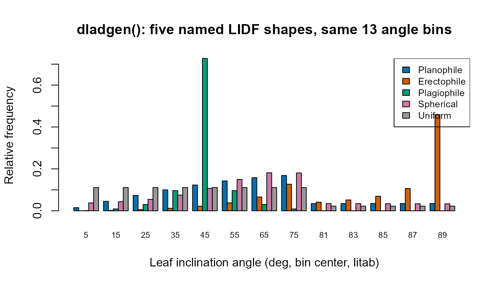

Parameter & Trait Glossary
parameter-glossary.Rmd
library(ToolsRTM)Every tutorial in this package passes trait values into a leaf, canopy, soil, or atmosphere model without stopping to explain what each one physically means or what a realistic value looks like. This page is that stop: one place with every input’s meaning, units, typical range, and which model(s) actually use it. It’s a reference to come back to, not a tutorial to read start to finish.
1. Leaf traits
All five leaf models (prospect_D – bundled inside
foursail(..., LeafModel = "PROSPECT-D"),
prospect_PRO(), liberty(),
getFluspect.B(), getFluspect.Cx()) build on
the same PROSPECT physics: a leaf is treated as a stack of
absorbing/scattering plates, and each trait below is one absorbing
constituent (a pigment, water, dry matter) or one structural parameter
of that stack.
| Symbol | Meaning | Units | Typical range | Used by |
|---|---|---|---|---|
N |
Leaf structure parameter – effective number of compound-leaf
“plates” the PROSPECT mesophyll model integrates over. Higher
N = more internal scattering = higher NIR
reflectance/transmittance, independent of any pigment. |
unitless | 1 – 3 (rarely up to 4.5) | PROSPECT-D, PROSPECT-PRO, Fluspect-B/Cx |
Cab |
Chlorophyll a+b content. The single strongest driver of visible-light (400-700nm) absorption – healthy green leaves sit high in this range, senescent/stressed leaves low. | ug/cm2 | 0 – 100 (20-80 typical for healthy vegetation) | PROSPECT-D, PROSPECT-PRO, Fluspect-B/Cx |
Car |
Carotenoid content (mostly xanthophylls + beta-carotene). Absorbs
alongside Cab in the blue/green, becomes visually dominant
only once Cab drops (autumn colours). |
ug/cm2 | 0 – 25 | PROSPECT-D, PROSPECT-PRO, Fluspect-B/Cx |
Anth |
Anthocyanin content. Usually near zero in healthy green leaves; rises under stress or senescence and adds a distinct absorption feature around 550nm. | ug/cm2 | 0 – 40 (0 – ~7 for typical crop canopies) | PROSPECT-D, PROSPECT-PRO |
Cbrown |
Brown-pigment absorption coefficient – a lumped, unitless proxy for senescent/degraded material, not a physical concentration. | unitless (0-1 absorption coeff.) | 0 (green, healthy) – 1 (fully senescent) | PROSPECT-D, PROSPECT-PRO |
EWT (also Cw) |
Equivalent water thickness – the water column each unit leaf area would form if spread into a uniform film. Drives the SWIR water-absorption features (~1450/1940/2500nm). | cm (equivalent to g/cm2) | 0.002 – 0.05 (0.01-0.02 typical) | PROSPECT-D, PROSPECT-PRO, Fluspect-B/Cx, Liberty |
LMA (also Cm) |
Leaf mass per area – total dry matter content, lumping cellulose, lignin, protein and everything else that isn’t water or pigment. Drives the flatter SWIR dry-matter absorption. | g/cm2 | 0.002 – 0.02 | PROSPECT-D, Fluspect-B/Cx |
alpha |
Leaf-air interface incidence-angle parameter used in the Fresnel-refraction (Stern-Gershun/Allen) part of the PROSPECT solution – not a trait of the leaf’s biochemistry, a geometric-optics constant of the model itself. | degrees | fixed at 40 in virtually all published PROSPECT work | PROSPECT-D, PROSPECT-PRO, Fluspect-B/Cx |
Prot |
Protein content – one of the two constituents PROSPECT-PRO splits
out of LMA. |
g/cm2 | 0 – 0.01 | PROSPECT-PRO |
CBC |
Carbon-based constituents (cellulose + lignin) – the other
constituent PROSPECT-PRO splits out of LMA. |
g/cm2 | 0 – 0.02 | PROSPECT-PRO |
Cs |
Senescent-material absorption coefficient (Fluspect’s own, separate
from PROSPECT’s Cbrown). |
unitless (0-1) | 0 (fresh) – 1 | Fluspect-B, Fluspect-Cx |
Cx |
Xanthophyll de-epoxidation state – the violaxanthin-to-zeaxanthin
conversion fraction (the photoprotective NPQ pigment pool).
Cx = 0 is fully violaxanthin (relaxed), Cx = 1
is fully zeaxanthin (photoprotecting). |
unitless (0-1) | 0 – 1 | Fluspect-Cx |
fqe |
Fluorescence quantum efficiency – how much of absorbed PAR is re-emitted as chlorophyll fluorescence rather than used photochemically or dissipated as heat. | unitless | ~0.01 typical default | Fluspect-B, Fluspect-Cx |
PROSPECT-PRO and plain LMA-based models
(PROSPECT-D, Fluspect) are mutually exclusive dry-matter
parameterizations of the same leaf – supplying both
LMA and non-zero Prot/CBC in one
foursail() LUT row is a modelling choice, not something the
package validates for you (getMLmodel()’s R version
silently keeps whichever the leaf-model branch you called actually
reads).
1.1 LIBERTY-only structural traits
liberty() targets conifer needles, not broadleaves, and
needs a different structural parameterization – no
N/alpha Fresnel-optics layer, but explicit
cell geometry instead:
| Symbol | Meaning | Units | Typical range |
|---|---|---|---|
cell.d |
Average mesophyll cell diameter. | um | 20 – 60 |
inter.c |
Intercellular air-space fraction – controls internal scattering, the
needle analogue of PROSPECT’s N. |
unitless (0-1) | 0.03 – 0.06 |
baseline.abs |
Baseline (wavelength-flat) absorption coefficient, a small residual-absorption term. | unitless | ~0.0005 – 0.001 |
leaf.thick |
Needle thickness. | relative units (model-internal scale, not mm) | 1 – 2 |
albino.abs |
Extra absorption for albino/depigmented tissue – 0 for a normal green needle. | unitless | 0 (typical) |
lign.cell |
Lignin+cellulose cell-wall absorption term (LIBERTY’s own dry-matter
proxy, distinct from PROSPECT’s LMA/CBC). |
unitless | 1 – 3 |
Nitrogen |
Foliar nitrogen content, scaling protein-related absorption. | relative units | ~1 (typical default) |
2. Canopy structure and viewing geometry
Once a leaf model produces reflectance/transmittance,
foursail(), foursail2(), and
inform() turn it into a canopy-level BRF. All three share
the leaf-angle-distribution and geometry parameters below;
foursail2() and inform() each add their own
extra layer of structure.
| Symbol | Meaning | Units | Typical range | Used by |
|---|---|---|---|---|
LAI |
Leaf area index – total one-sided leaf area per unit ground area. The single strongest canopy-level driver of NIR-plateau height and visible-band saturation. | m2/m2 | 0.1 – 8 (0 = bare soil) | foursail, foursail2, inform |
LIDFa, LIDFb
|
Leaf inclination distribution function shape parameters (Verhoef
1998’s two-parameter system, TypeLidf = 1).
LIDFa mainly sets the average leaf angle (from -1
= horizontal/planophile to +1 = vertical/erectophile);
LIDFb adjusts the distribution’s bimodality/spread. See
Section 3 for the canonical named shapes. |
unitless, each in [-1, 1] | see Section 3 table | foursail, foursail2, inform |
TypeLidf |
Which LIDF parameterization LIDFa/LIDFb
are read as: 1 = Verhoef’s two-parameter system (Section
3); 2 = ellipsoidal, in which case LIDFa alone
is the mean leaf angle in degrees (0-90) and
LIDFb is ignored. |
1 or 2
|
– | foursail, foursail2, inform |
hspot |
Hot-spot size parameter – leaf width divided by canopy height, controlling how sharply reflectance peaks when the sun and viewer are aligned (no visible shadows). | unitless | 0.01 – 0.5 | foursail, foursail2, inform |
tts |
Sun zenith angle. | degrees | 0 – 90 | foursail, foursail2, inform, spart |
tto |
View (sensor) zenith angle. | degrees | 0 – 90 (0 = nadir) | foursail, foursail2, inform, spart |
psi |
Relative azimuth between sun and viewer. | degrees | 0 – 180 | foursail, foursail2, inform, spart |
2.1 foursail2()-only: two-layer (green + brown)
canopy
| Symbol | Meaning | Units | Typical range |
|---|---|---|---|
fraction_brown |
Fraction of total LAI that is the brown/senescent layer rather than the green layer (each layer can carry its own leaf traits). | unitless (0-1) | 0 – 1 |
diss |
Dissociation factor between the two layers’ vertical distributions – how much the green and brown layers overlap vs. separate vertically. | unitless | 0 – 1 |
Cv |
Vertical clumping/coverage factor for the canopy. | unitless | ~0.2 – 5 |
Zeta |
Structure factor controlling the relative vertical placement of the two layers. | unitless | 0 – 1 |
2.2 inform()-only: explicit forest-stand geometry
| Symbol | Meaning | Units | Typical range |
|---|---|---|---|
LAIu |
Understorey LAI – the ground-layer vegetation beneath the tree crowns, modelled with its own (implicit) fourSAIL run. | m2/m2 | 0 – 3 |
sd |
Stem density – trees per unit ground area. | trees/ha (model-internal count) | 200 – 1500 |
cd |
Crown diameter. | m | 2 – 10 |
h |
Tree height. | m | 5 – 30 |
skyl |
Diffuse-light fraction of total incoming irradiance. | unitless (0-1) | ~0.1 (typical clear-sky default) |
inform()’s canopy-level LAI is the
overstorey (tree-crown) LAI only – LAIu is
added as a separate, independently-varying understorey term, not a
component subtracted from LAI.
3. Named leaf-angle distributions
LIDFa/LIDFb rarely need to be hand-tuned:
six canonical shapes cover most real canopies (from
dladgen()’s own documentation,
TypeLidf = 1):
| Name | LIDFa |
LIDFb |
Typical canopy |
|---|---|---|---|
| Planophile | 1 | 0 | Mostly horizontal leaves (many crops, grasses) |
| Erectophile | -1 | 0 | Mostly vertical leaves (some grasses, conifers) |
| Plagiophile | 0 | -1 | Mostly oblique (~45 deg) leaves |
| Extremophile | 0 | 1 | Bimodal horizontal+vertical mix |
| Spherical | -0.35 | -0.15 | Leaf angles distributed as if on a sphere – the most common “no
strong prior” default, and this package’s own common_lut
default in the tutorials |
| Uniform | 0 | 0 | All angles equally likely |
shapes <- list(Planophile = c(1, 0), Erectophile = c(-1, 0),
Plagiophile = c(0, -1), Spherical = c(-0.35, -0.15),
Uniform = c(0, 0))
lidf_result <- lapply(shapes, function(ab) dladgen(ab[1], ab[2]))
angles <- lidf_result[[1]]$litab
lidf_freq <- sapply(lidf_result, function(x) x$lidf)
barplot(t(lidf_freq), beside = TRUE, names.arg = angles,
col = c("#0072B2", "#D55E00", "#009E73", "#CC79A7", "#999999"),
xlab = "Leaf inclination angle (deg, bin center, litab)", ylab = "Relative frequency",
main = "dladgen(): five named LIDF shapes, same 13 angle bins", cex.names = 0.7)
legend("topright", names(shapes),
fill = c("#0072B2", "#D55E00", "#009E73", "#CC79A7", "#999999"), cex = 0.8)
Planophile concentrates mass at low angles (horizontal leaves), erectophile at high angles (vertical leaves), and spherical spreads smoothly across the whole range – exactly the qualitative behaviour the names promise.
4. Soil: MARMIT (dry -> wet)
get.marmit.rsoil() turns a dry reference soil spectrum
into a wet one (Tutorial 03’s soil-brightness section, Tutorial 16 in
full):
| Symbol | Meaning | Units | Typical range |
|---|---|---|---|
id / soil_id
|
Which dry reference spectrum to start from, from a bundled
soil-spectral-library database (e.g. "Bablet_2016"). |
integer index | database-dependent |
L |
Water-film optical thickness – how much liquid water coats the soil
surface. L near 0 is dry; larger L is
wetter. |
cm (thin-film optical path) | 0.001 (dry) – 0.15+ (wet) |
eps |
Soil surface roughness/optical-path parameter modulating how the water film scatters light. | unitless | 0.05 (dry/smooth) – 1.0 (wet/rough) |
5. Soil + atmosphere: SPART (BSM soil, SMAC atmosphere)
SPART()/spart_toa()-family functions
(Tutorial 03) use a different soil parameterization (BSM,
Brightness-Shape-Moisture) plus an atmospheric-correction layer (SMAC)
that plain foursail() doesn’t need:
| Symbol | Meaning | Units | Typical range |
|---|---|---|---|
BSMBrightness |
Overall soil brightness (scales the whole dry-soil spectrum up/down). | unitless | 0.3 – 0.9 |
BSMlat |
Soil spectral-shape “latitude” – a BSM-specific empirical shape parameter (not a geographic coordinate), typically 20-40. | degrees (empirical, not geographic) | 20 – 40 |
BSMlon |
Soil spectral-shape “longitude” – likewise empirical, not geographic. | degrees (empirical, not geographic) | 45 – 65 |
SMp |
Soil moisture, volume percentage. | % | 5 – 55 |
SMC |
Soil moisture capacity (field-capacity-like scaling constant). | % | ~25 (recommended default) |
film |
Effective optical thickness of a single water film (BSM’s own
wetting-physics analogue of MARMIT’s L). |
cm | ~0.015 (recommended default) |
Pa |
Atmospheric pressure at the surface. | hPa | ~900 – 1030 (~1000 sea-level default) |
aot550 |
Aerosol optical thickness at 550nm – how hazy the atmosphere is. | unitless | 0.05 (clear) – 0.5+ (hazy) |
uo3 |
Total-column ozone amount. | atm-cm | ~0.3 – 0.4 |
uh2o |
Total-column water vapour amount. | g/cm2 | ~1 – 3 |
6. Which models actually read which leaf/canopy inputs
A single glance at which of this page’s traits feed which function –
useful when assembling one LUT row meant to drive several models at once
(Tutorial 02’s common_lut pattern):
| Trait | PROSPECT-D | PROSPECT-PRO | Liberty | Fluspect-B/Cx | foursail2 | inform |
|---|---|---|---|---|---|---|
| N | x | x | x | x | x | |
| Cab | x | x | x | x | x | x |
| Car | x | x | x | x | x | |
| Anth | x | x | x | x | ||
| Cbrown | x | x | x | x | ||
| EWT | x | x | x | x | x | x |
| LMA | x | x | x | x | ||
| alpha | x | x | x | x | x | |
| Prot | x | |||||
| CBC | x | |||||
| Cs | x | |||||
| Cx | x | |||||
| fqe | x | |||||
| LIDFa/LIDFb/TypeLidf | x | x | x | x | x | x |
| LAI | x | x | x | x | x | x |
| hspot | x | x | x | x | x | x |
| tts/tto/psi | x | x | x | x | x | x |
| fraction_brown/diss/Cv/Zeta | x | |||||
| LAIu/sd/cd/h/skyl | x |
(Prot/CBC only apply when the leaf model
actually reads PROSPECT-PRO’s split; a row that supplies both
LMA and Prot/CBC still works, but
only one pathway is actually used depending on which leaf model the
canopy call was configured with.)
What’s next
- Tutorial 01/02 – see these traits in action, one leaf model and one canopy model at a time, then all five leaf models x three canopy models together.
- Tutorial 03 – SPART/BSM/SMAC soil and atmosphere parameters, end to end.
- Tutorial 16 – MARMIT wet-vs-dry soil, coupled into a full canopy simulation.
- Tutorial 10 – formal sensitivity analysis: which of these traits actually matters most, and where in the spectrum.
- For SCOPE’s own (larger) trait set – adding photosynthesis, fluorescence, and energy-balance variables on top of everything here – see SCOPEinR’s own Trait & LUT Glossary.